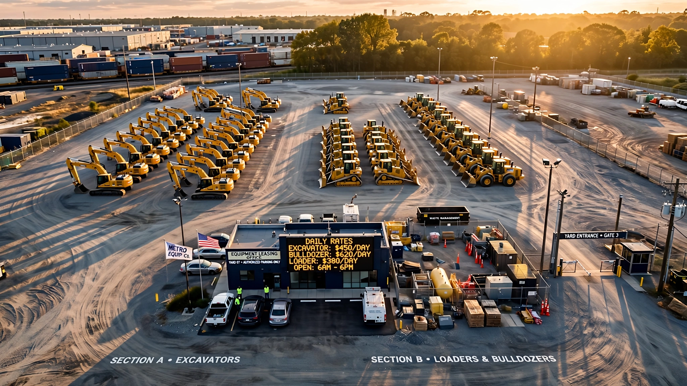
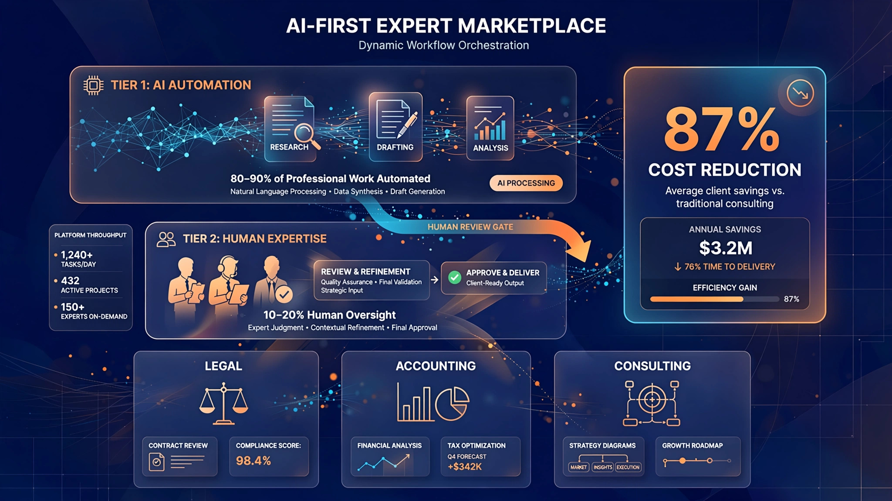
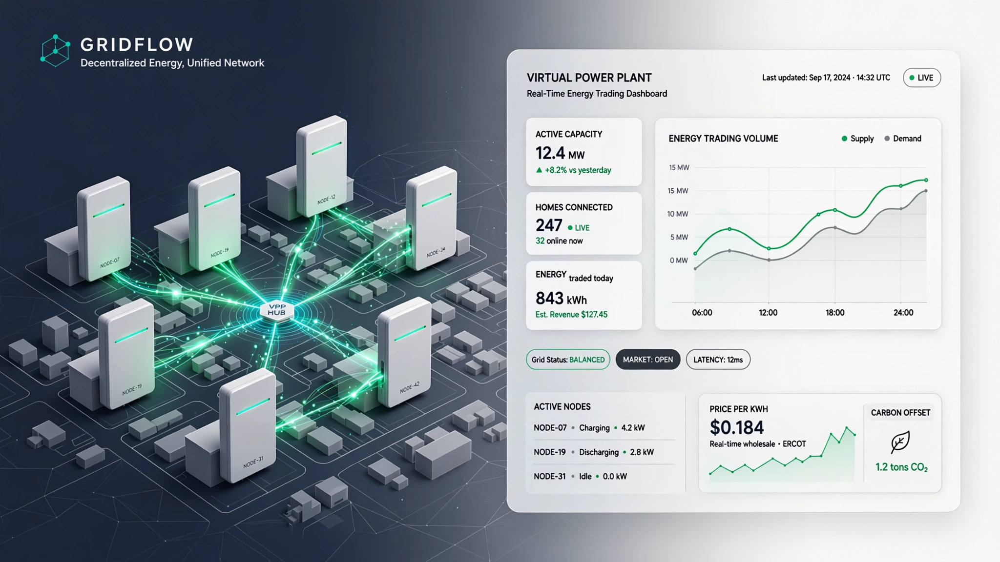
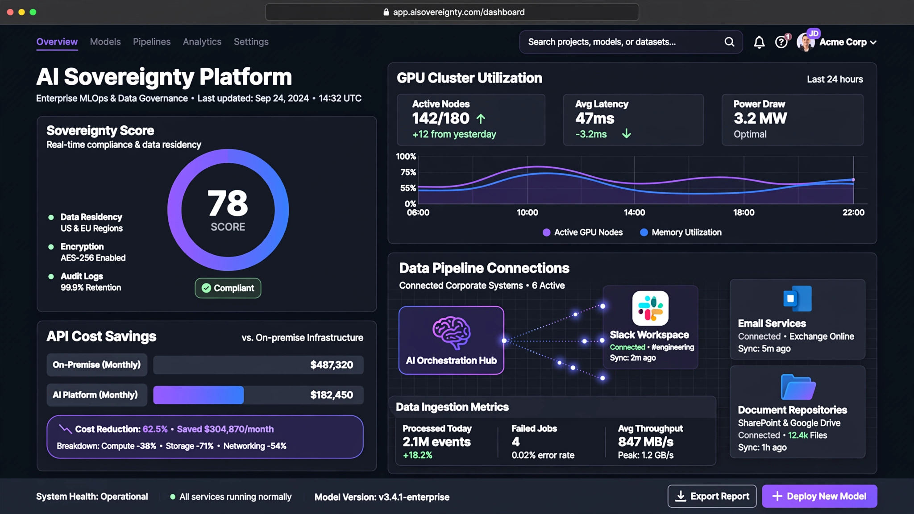
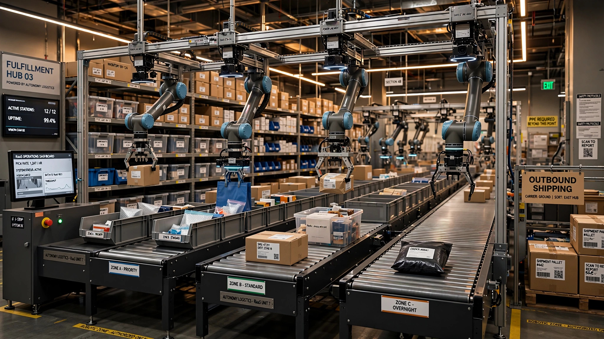
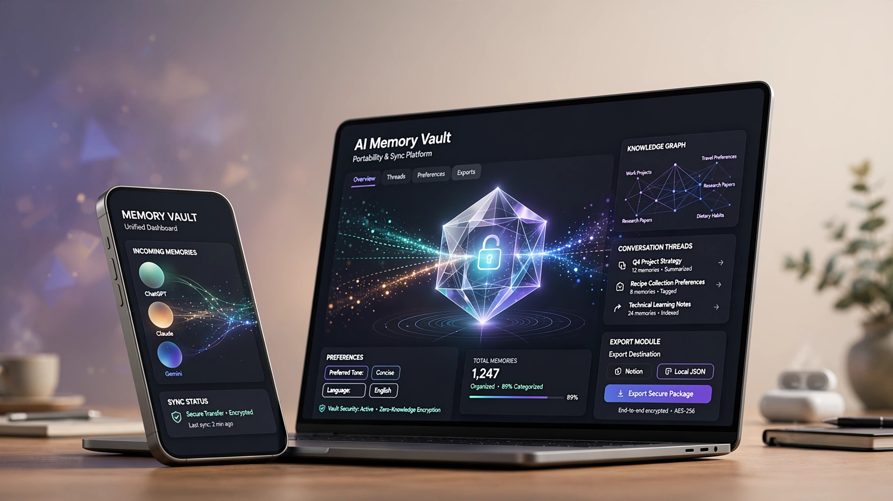
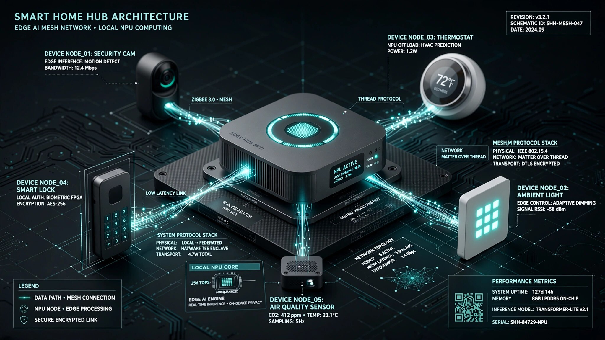
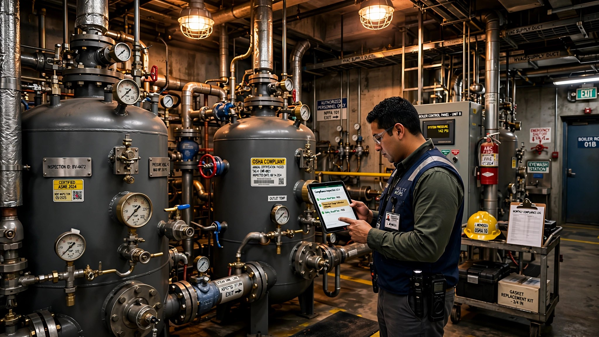
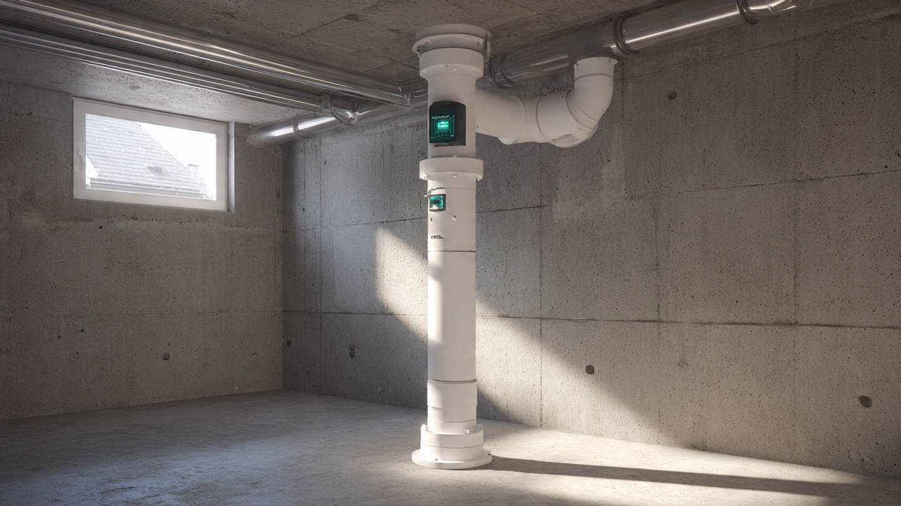

Vendor-Neutral Roof Lifecycle Intelligence for Commercial Property Portfolios
CentiMark, Tecta America, and TEMA collectively manage $4.2 billion in commercial roofing contracts. Their portfolio management platforms are sales tools. The 380,000 commercial building owners making $8–15/sq ft replacement decisions have no independent data.
Dental Practice Transaction Intelligence: The CoStar That 200,000 Dentists Don't Have
An estimated 10,000 dental practices change hands every year, and the sellers have no comparable sales database. DSOs backed by private equity buy hundreds of practices annually with proprietary comp data and EBITDA playbooks. The dentist selling once in a lifetime prices by gut feel, leaving $562M to $750M in aggregate value on the table annually.
Craft Beverage Excise Tax Compliance SaaS for Small Producers
22,621 craft breweries, distilleries, and wineries file TTB excise tax reports every month. Most do it in spreadsheets. The CBMA made tax rates permanent and complex — tiered by volume, split by beverage type, modified by 5010 credits and flavor deductions. Nobody has built the TurboTax for beverage alcohol. The $223.8M annual compliance labor cost says someone should.
Marina Slip Yield Management SaaS for Independent Harbor Operators
Blackstone paid $5.65 billion for Safe Harbor Marinas at 21x FFO. The other 12,000 independent marina operators pricing 900,000 slips for 11 million registered boats use last year's rate card and a phone call to the harbor next door. Every comparable industry has rate intelligence. Marinas have nothing.
Non-Revenue Water Audit and Loss Reduction SaaS for Small Community Water Systems
Nearly one in five gallons of treated US drinking water never reaches a customer. That is 2.7 trillion gallons lost annually, $6.4 billion in unrealized revenue. The industry-standard audit tool is a free Excel spreadsheet. The 45,000 small systems serving 24 million Americans need something between a spreadsheet and a six-figure enterprise platform, especially now that state mandates...

Equipment Rental Rate Intelligence SaaS for Independent Fleet Operators
United Rentals uses zip-code-level pricing algorithms across 1,360 locations. The 12,000+ independent operators pricing $26B in North American rentals use gut feel and last year's rate card. Nobody has built the STR or CoStar for equipment rental. The rate opacity tax costs independents an estimated $1.3-1.7B annually in foregone revenue.
Multimodal AI Therapeutic Companion with Form-Factor-Optimized Empathy Delivery
AI chatbots score 2× higher than physicians on empathy scales, but 78% of users still prefer human therapists. The gap isn't emotional intelligence — it's form factor. Voice AI creates 4.4× more boundary violations than text. Smart displays build stronger therapeutic alliance than either. The startup that matches the right modality to the right therapeutic moment captures a $4.2 billion market ...

AI-Augmented Expert Marketplace Where AI Handles 80% of Every Engagement
For every $1 businesses cut from freelancer budgets, they spent $0.33 on AI tools. Fiverr's active buyers fell 13.6% while spend per buyer rose 13.3% — the classic upmarket retreat. The low end of professional services is being permanently absorbed by AI. But the 33:1 cost reduction doesn't eliminate the need for expertise; it restructures how expertise is delivered. The startup that builds the...

Residential Virtual Power Plant Platform for Home Battery Aggregation and Grid Arbitrage
Battery prices fell 45% in the last year alone. At $70/kWh, home batteries cross the payback threshold in 15 high-rate states. At $50/kWh — projected by 2028 — the payback period drops under 8 years almost everywhere. 1.2 million residential batteries are already installed, but 95% sit idle except during outages. A platform that aggregates these batteries into a virtual power plant, earns reven...
AI Tutoring Platform That Makes Learning Deliberately Harder to Make It Actually Stick
Bloom's famous 2-sigma claim — that one-on-one tutoring produces two standard deviations of improvement — has been inflated by a factor of six for 40 years. The real effect is 0.3 sigma. Meanwhile, retrieval practice, spacing, and interleaving produce 0.5-0.7 sigma gains, with the critical ingredient being struggle, not smooth explanation. Every AI tutoring platform on the market — Khanmigo, Du...

Enterprise Model Sovereignty Platform: Build, Fine-Tune, and Serve Your Own AI Models from Proprietary Data
The average enterprise spends $162,800 per year on LLM API calls. Above 500,000 queries per month, self-hosted fine-tuned models cost 40-60% less while outperforming generic APIs on domain-specific tasks by 15-25%. Yet 94% of enterprises rent commodity intelligence from OpenAI and Anthropic because the MLOps stack required to fine-tune, serve, and maintain proprietary models is a 6-person, $1.2...

Vertical Manipulation-as-a-Service for E-Commerce Fulfillment Bin-Picking
$8.8 billion has been invested in humanoid robots that can dance on stage but can't load a dishwasher. The manipulation success rate gap between structured labs (87%) and real homes (45%) means general-purpose household robots are 5-10 years away. But e-commerce fulfillment — picking items from bins in warehouses — is a constrained manipulation problem where the same gap is much smaller: known ...

Personal AI Memory Vault: Own Your AI Context Across Every Assistant
ChatGPT has 200 million weekly users building personal context profiles they can't export. Claude, Gemini, and Copilot do the same. Switch assistants and you start from zero — retraining preferences, re-explaining your life, losing months of accumulated understanding. Google is the only provider offering any import capability, and it captures barely half the context. The portability gap is the ...
AI-First Primary Care Triage Using Consumer Biomarker Data and At-Home Diagnostics
AI matched or beat dermatologists in 30 of 38 diagnostic categories. It matched radiologists on chest X-rays, pathologists on tissue slides, and emergency physicians on triage decisions. But AI isn't replacing doctors — it's replacing the $171 average cost of a primary care visit for the 60% of visits that end with reassurance, a referral, or an OTC recommendation. 500 million wearable devices ...

Ambient AI Middleware for Cross-Device NPU Orchestration and Seamless Context Handoff
Phone NPUs are now 100× faster than they were five years ago. Smart speakers, laptops, AR glasses, and home hubs all ship with neural processing hardware. But each runs its own isolated AI — Siri on the iPhone, Alexa on the Echo, Google on the Nest. $59 billion worth of NPU silicon sits idle 95% of the time because no middleware connects them. The platform that orchestrates AI inference across ...
Secular Meaning Community Platform for Purpose Building in the Post-Work Era
1.46 million Japanese have withdrawn from society. 30% of Americans have left organized religion. Early retirees report depression rates 40% higher than working peers. FIRE adherents who achieve financial independence discover that solving the money problem doesn't solve the meaning problem. The post-work meaning crisis isn't coming — it's here, and it has no institutional solution. Churches, w...

Boiler and Pressure Vessel Inspection Compliance SaaS for Building Owners
1.875 million registered boilers and pressure vessels in the US, each requiring periodic inspection under state law. Violation rates hit 17-18% for the low-pressure steam boilers heating apartment buildings and hospitals. The inspection process is controlled by insurance companies whose inspectors examine equipment they financially underwrite. Building owners track compliance with filing cabinets. The vendor-neutral compliance platform for the asset owner side doesn't exist yet.
Commercial Pool Chemical Compliance SaaS for Multi-Facility Aquatic Operators
309,000 public pools in the US. 12% of routine inspections trigger immediate closure. 208 outbreaks in five years, 13 dead. Chemical automation hardware exists, but the compliance layer connecting sensors to health department documentation runs on paper clipboards. A $349 inline sensor and $99/month SaaS replaces manual testing logs with continuous, compliance-grade monitoring for hotel chains, municipal parks, and fitness operators.

Radon Mitigation System Monitoring SaaS for Contractors and Property Managers
2M+ US homes have radon mitigation fans that fail silently every 5-10 years. No alert, no monitoring, no recurring revenue for the installing contractor. A $79 pipe sensor and $8/month SaaS transforms one-time installs into managed services while closing a public health blind spot that contributes to 21,100 lung cancer deaths annually.
Cooling Tower Legionella Compliance SaaS for Building Owners and Water Treaters
177,000 US commercial buildings have cooling towers. Legionnaires' disease cases are rising 10.4% per year, with a 10% fatality rate. ASHRAE 514 just expanded compliance requirements to all building water systems. NYC fines hit $25,000 per violation. The compliance workflow connecting owners, water treaters, labs, and regulators runs on spreadsheets and phone calls.
Fiber Broadband Permit & Milestone Tracking SaaS for BEAD Subgrantees
$42.45B in BEAD funding is hitting the ground. 20+ carriers already missed RDOF deadlines citing permitting delays. A typical 50-mile fiber route requires 1,300+ permit actions across dozens of agencies. Railroad crossings alone average $40K and 15 months per crossing. Small ISPs winning these contracts track everything with spreadsheets. The permit management layer for America's biggest infrastructure buildout since rural electrification doesn't exist.
Wildfire Defensible Space Compliance SaaS for California Property Owners
2.7M California homes in fire severity zones. 684K stuck on the FAIR Plan insurer of last resort. AB 3074 Zone 0 compliance deadlines hit January 2027. SB 896 mandates a common reporting platform that doesn't exist. Nobody has built the system that connects a homeowner's cleared brush pile to an insurer's underwriting file.

Agentic News Media as a Service (Fourth Estate AI)
6.5M consumer complaints filed with the FTC annually. Companies ignore customers but respond to journalists within hours. AI agents backed by a real media platform can scale that asymmetry. Not a chatbot. Not a robot lawyer. An AI newsroom where every consumer is a source.
Pesticide Application Compliance SaaS for Independent Pest Control Operators
16,565 pest control firms employ 109,384 technicians performing tens of millions of pesticide applications annually. Every one must be documented under FIFRA and 50 different state regimes. Most operators still use handwritten field tickets and spreadsheets that wouldn't survive a state audit. Existing CRM tools treat compliance as a free-text field. A $22/tech/month platform could close the gap.
Lot Rent Optimization for Independent MHC Operators
44,000 manufactured housing communities, 91% independently owned. Independent operators charge 15-30% below institutional rates because no lot rent comp data exists. The pricing gap funds a PE acquisition wave absorbing 2,000+ parks. A $3/pad/month tool could close the gap before the PE firms do.
Dynamic Pricing SaaS for Independent Self-Storage
$47B industry, 42,000 independent facilities, 70% of the market by count. REITs use algorithmic pricing to extract 8-12% more revenue from identical square footage. Nobody has built the affordable, PMS-agnostic tool that brings REIT-grade pricing to the single-facility operator.
Refrigerant Compliance SaaS for Independent HVAC Contractors
EPA's ER&R rule dropped the refrigerant tracking threshold from 50 lbs to 15 lbs on Jan 1, 2026, pulling millions of commercial HVAC systems into compliance. Penalties: $44,539/day. Most contractors track with clipboards. The mid-market compliance software barely exists.
Propane Delivery Route Optimization SaaS for Independent Fuel Dealers
11.9M households heat with propane, deliveries scheduled on 1970s degree-day math. Tank monitors cut stops by 33% but fewer than 15% of tanks have one. Combine real-time tank data with route optimization and save $300K+/year per fleet.
PBM Reimbursement Audit SaaS for Independent Pharmacies
18,984 independent pharmacies, 83% generic fill rate, gross margins at a 10-year low. PBMs reimburse below acquisition cost on thousands of scripts. The first major PBM reform in 20 years just became law, creating an appeals process. Now they need the software.
Stored Grain Monitoring SaaS for Independent Farms
13.63B bushels of on-farm storage at 80% capacity utilization, and most bins monitored by a farmer climbing a ladder. Wireless IoT sensors + subscription monitoring = $300/year to protect $124,500 in a single bin.
Licensing Compliance SaaS for Childcare Centers
209,000 licensed providers, 35% staff turnover, 5+ compliance checks per hire across 50 different state systems. brightwheel built the parent app. Nobody built the compliance layer that keeps the license active.
Predictive Maintenance for Restaurant Kitchens
$3,200/month in equipment losses per restaurant. 86 Repairs found the market but left the prediction layer on the table. IoT sensors + ML to predict walk-in cooler failures 48 hours before they happen.
Water Leak Detection as-a-Service for Multi-Family
$12B/year in water damage claims. Flo by Moen targets homeowners at $500/unit. Nobody owns the multi-family property manager who has 200 units and needs a per-door SaaS model with insurance integration.

Life-Event-Triggered Estate Planning
63% of Americans have no will. The existing tools create documents. Nobody monitors life events (marriage, home purchase, new child) and triggers updates automatically. The gap is maintenance, not creation.
Veterinary Insurance Claims Automation
7M insured pets, $4.7B in premiums, 20+ carriers. Vet clinics still process claims via 20 different portals. Human healthcare built clearinghouses decades ago. Veterinary has nothing comparable.
Cleaning Verification SaaS for Commercial Buildings
$90B market with 49% annual contract churn. The reason: nobody can prove the work was done. BLE beacons + on-device photo AI create verifiable proof of service for $8 per zone.
Back-Office Automation for Small Trucking Fleets
97% of US carriers run fewer than 20 trucks. They spend 12+ hours/week on IFTA, DOT compliance, and invoicing because every tool is built for the big fleets. The incumbent is QuickBooks + a filing cabinet.